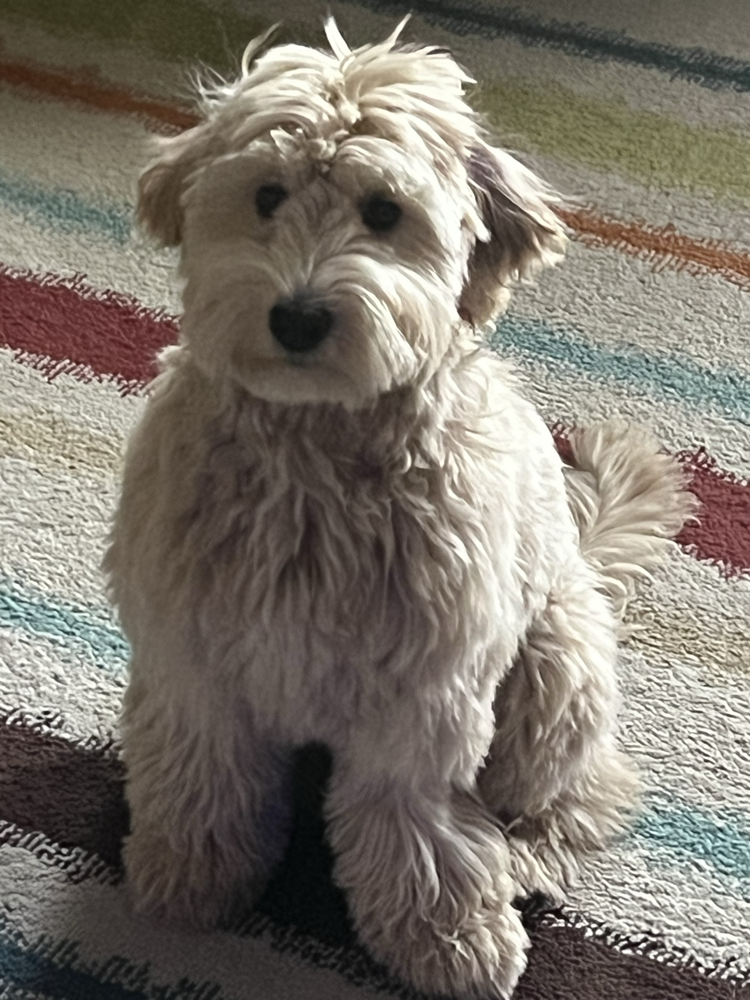
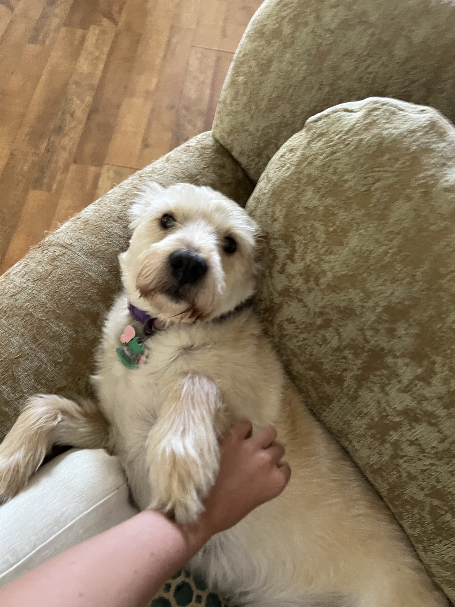

There was a puppy named Kona. Kona was a Goldendoodle, meaning Kona's mom was a poodle and her father a golden retriever. Unfortunately, Kona never met her parents because she was taken away when she was just a pup. A devious dog seller stole her staight from the backyard of her home. She was thrown in the back of a red pick-up truck. She knew she had to escape. She wanted to be with her family and she defintlly didn't want to go where the dog seller was taking her. There were other dogs in the truck with her the the man had also taken. They speculated that they would be sold to dog fighting rings. Kona knew she was scared but she had to do something.
She realizes the only way out is to jump. The truck comes to a red light and she goes for it. She runs and runs and runs. When she finally stops she has no idea where she is or how to get back home. She wonders the streets for days after. Searching for food and shelter to survive till the next day. She met kinda strangers that would give her food and not so kind strangers that would yell at her to "Get outta here mutt!!!" Kona finally came across a soon to be friend. Another dog passing in the alley way asked her where she was from. They both had been taken from their homes from the same guy. The other dogs name was Gus. Gus was ragged and ruff around the edges. He told Kona that he had been on the street for years now. When he escaped he went back to his home and his owners weren't there when he got back. From that day forward, Gus decided that he would do everything he could to keep dogs on the streets safe from this ugly dog-napper man. Kona looked at him and knew she would be safe with him. Kona decideds to stick with Gus and help him on his journey and search for her family along the way.
 For more short stories click here Back to main page.